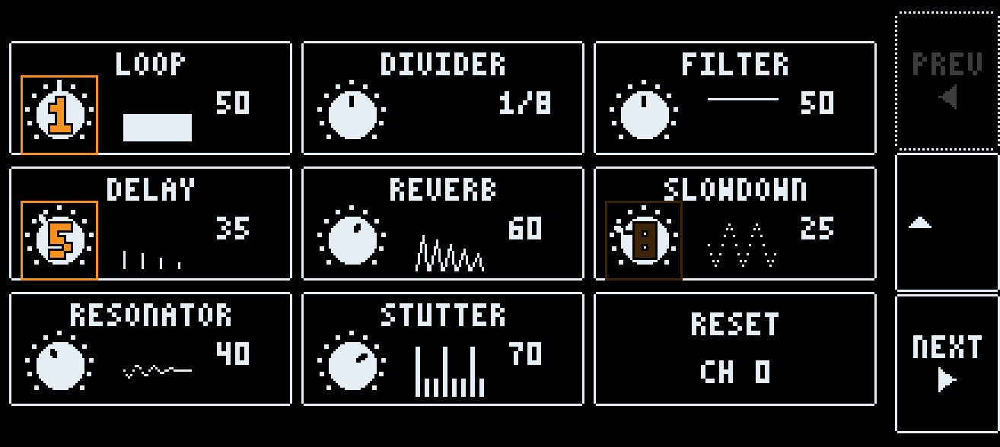
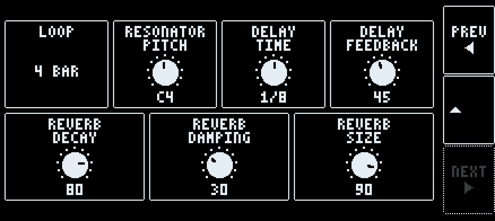
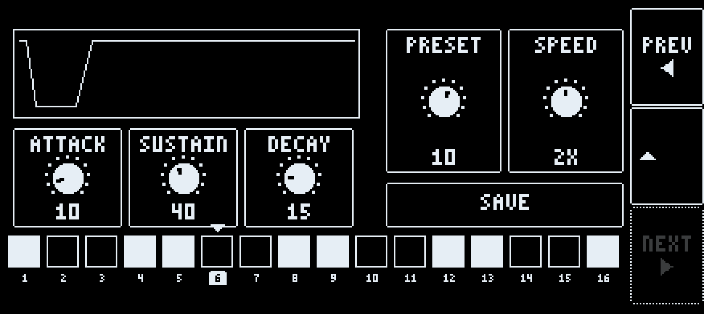

Looper

Always in sync looper with DJ effects for transitions between patterns.
Once you turn it up, it locks and plays the last loop until you turn it back to zero. Important: until the looper is full, all the dials are locked: this is by design, not a bug. On the main page you can reset the looper by pressing the key of your looper track. on the effects page, the same key resets the effects.

NEXT opens the settings: the loop length, 1 to 8 bars, and the pitch, time and size of the resonator, delay and reverb.

The last page is the stutter gate. Tap the 16 steps to choose where it cuts, and shape the cut with ATTACK, SUSTAIN and DECAY.